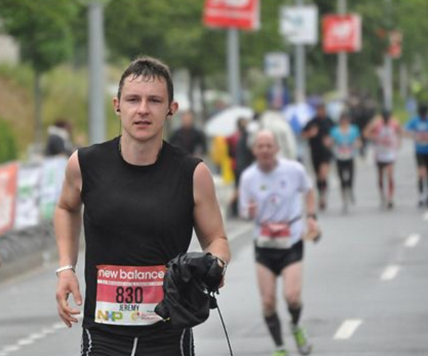

May 2010. I quit smoking and start running. I run about 10k twice a week. After a few competitions and meeting several inspiring marathoners, I register for a marathon in June 2012.
January 2012. I design a training plan: 3 runs a week. A long distance (at least 15k), a fun run (10k), and a cardio workout (interval run) per week. The motivation is in full swing! It feels easy. However, after a few weeks, the interval training starts to be painful.
Febuary 2012. Interval run is really painful.
March 2012. I hate interval run.
April 2012. I skip some interval trainings.
May 2012. I get back to interval runs… Against my will.
June 2012. And here we are: I get up and enjoy my breakfast early so that digestion is not done during the race. I warm up a bit. I feel great. I’m ready.
The starter's gun is fired. Let’s do this! My goal is to finish the race, in less than 4 hours would be very satisfying.
5k. I am faster than a bunch of runners. I love running, I feel great!
10k. It starts raining. #NorthernFrance #no surprise
15k. It’s easier than I thought. You know what? Let’s finish it in 3h30!
20k. Life is beautiful! I am awesome! Nothing can stop me!
25k. Look: a refreshment station. What about a bit of chocolate? Ok, let’s get back on track. My legs hurt a bit. I should not have slowed down.
28k. I'm in pain. Let’s finish this race in 4h as planned. Yeah, 4 h is great.
30k. Wooo, it hurts. Ouch! My legs, my feet, ouch! Come on, don’t give up! No, don’t slow down. It's the 30th k, it’s quite normal. Come on, let's finish this.
35k. Why am I doing this? Ok I quit. Yes, I quit, bye bye. I don’t wanna run anymore, I’m done. Ouch! I am in pain. My legs, my feet, ouch! Everything hurts. Where is the fun?! Ouch!
38k. Seriously, WTF?! I ran only 3 more k, are you serious? There MUST be an error, it must be the end. How much? 5 more k to go?! I want to go home. Mom! Chocolate! I want my bed! Ouch!
40k. Okay, don’t give up. 2 more k and it's over. Keep going. Shut up and run! Look, a photographer, smile! Ok, too bad for the photo. Keep going, look at the people around you, they are all brave, they are not whining. Come on dude. 6 months of training, no way you give up.
A few hundred meters from the end, many people around yell my name and encourage me. I run faster. Soon, it will be done. I run even faster. The finish line is just there. I fly.

I cross it. I slow down. I start walking. I can’t feel my legs, neither my foot. Something really sweet is flowing through my veins. It’s done. I did it. I f*cking did it. It’s over. It’s over!
I finished my first marathon in 4h14. Since then, I decided to run one every 3 years because it's a great sense of achievement and satisfaction but the training is really time and energy consuming… And I hate the interval training!